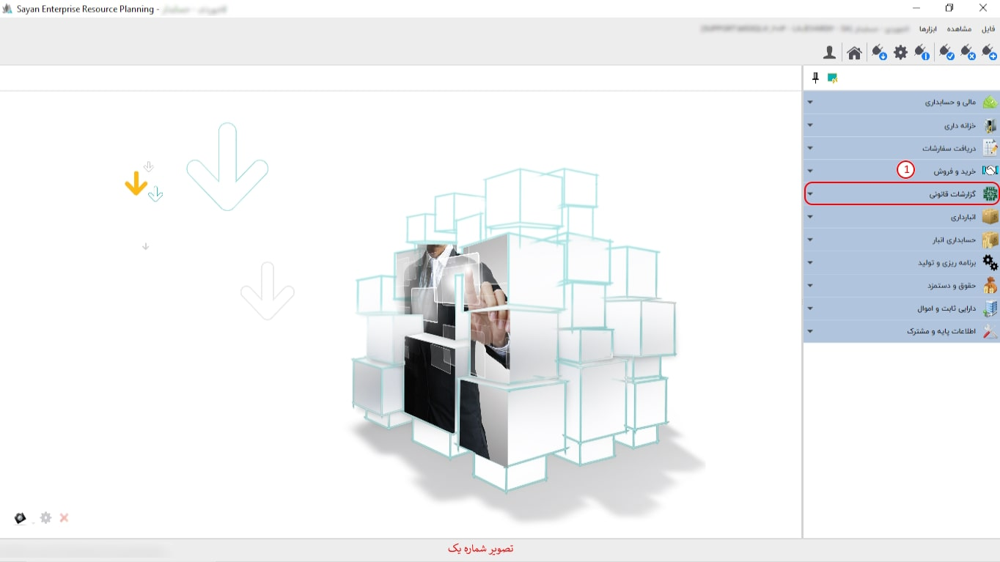

<<<<<<< HEAD سیستم گزارشات قانونی در دو بخش سامانه مودیان و تنظیم گزارشات فصلی یاری رسان شما خواهد بود ======= <<<<<<< HEAD
سیستم گزارشات قانونی در دو بخش سامانه مودیان و تنظیم گزارشات فصلی یاری رسان شما خواهد بوددر واقع گزارشات قانونی گزارشی است که ممیز حسابدار براساس الزام قانون خاصی آن را می نویسد ،اراعه گزارشات فصلی،معاملاتی به سازمان امور مالیاتی است این گزارش در واقع شامل اطلاعات مربوط به خرید و فروش کالا و خدمات هر فصل است ======= سیستم گزارشات قانونی در دو بخش سامانه مودیان و تنظیم گزارشات فصلی یاری رسان شما خواهد بود >>>>>>> 6e5688c5a8d916cb273cc17e132597cc2398f887 در واقع گزارشات قانونی گزارشی است که ممیز حسابدار براساس الزام قانون خاصی آن را می نویسد، اراعه گزارشات فصلی،معاملاتی به سازمان امور مالیاتی است این گزارش در واقع شامل اطلاعات مربوط به خرید و فروش کالا و خدمات هر فصل است >>>>>>> 8d2a5e6a77a8641a32bcf6fbfa8126aa0d8014aa برای آگاهی بیشتر از نحوه ی استفاده از امکانات این سیستم به راهنمای زیر شاخه های آن مراجعه فرمایید.